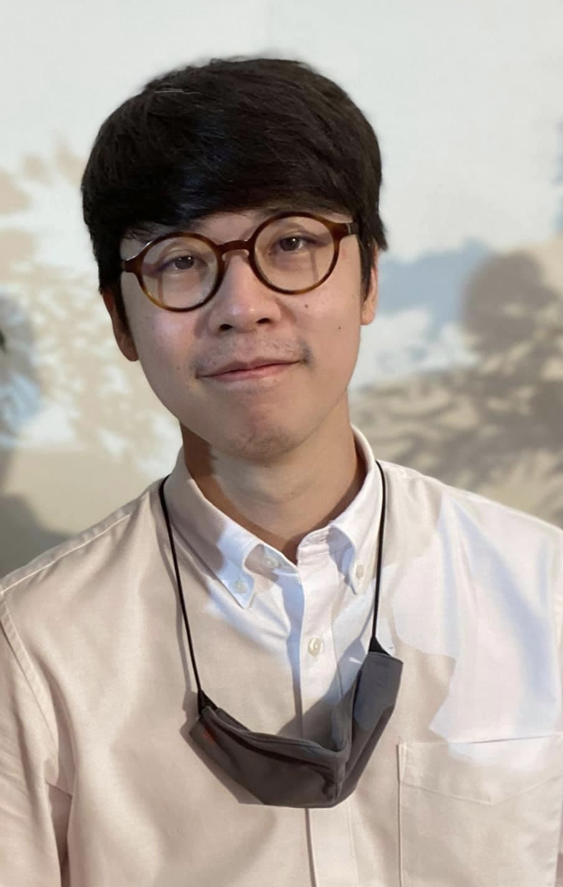

Thirachai D. Resume

Summary
Designer, Fabricator, Architect, Membrane Structure Emgineer
and currently learning to work in Web Development and Data Analyst Area
Education
- M.Eng. -Membrane Structure
- Anhalt University, Dessau, Germany
- 2014-2017
- M.Art -Architecture
- Staedelschule Architecture Class, Frankfurt, Germany
- 2014-2016
- B.Arch. (Exchange)
- Universitaet Kassel, Kassel, Germany
- 2010-2011
- B.Arch.
- Kasetsart University, Bangkok, Thailand
- 2007-2012
Work Experience
- Project Manager
- Logistics Department
- Siphya Construction Co.,Ltd., Bangkok, Thailand
- 2018-Present
- Membrane Engineer (Intern)
- Carpatec
- Madrid, Spain
- 2017
- Architect
- Design Department
- Siphya Construction Co.,Ltd., Bangkok, Thailand
- 2012-2013
Skills
Architectural Design Software
- AutoCAD
- Rhinoceros
- Grasshopper
- V Ray
Software Development
Language
- Thai - Native
- English - Profesional Proficiency
- German - Limited work Proficiency
- Spainish - Basic
Certifications
- (2017) Mixed Matters-Graded Membranes, AA VS, ILEK, University of Stuttgart, Stuttgart, DE
- (2016) Machine Learning workshop, IAAC, Barcelona, ES
- (2016) Audiovisual workshop - Tools, VJing & Video Mapping, INM, Frankfurt, DE
- (2015) Maya Rendering workshop - Studio Soqotra, IOUD, Innsbruck University, Innsbruck, AT
- (2015) LAVA-AXON Kinetic Structures workshop, LAVA, Stuttgart, DE
- (2014) Translate-Structural design in material fabrication Workshop, Sapienza University, Rome, IT
- (2014) Iterative Interpretations - Parametric Berlin & Bratislava Summer school, Berlin, DE
- (2014) Data Bodies - Grasshopper Workshop, Paris, FR
Contact Me